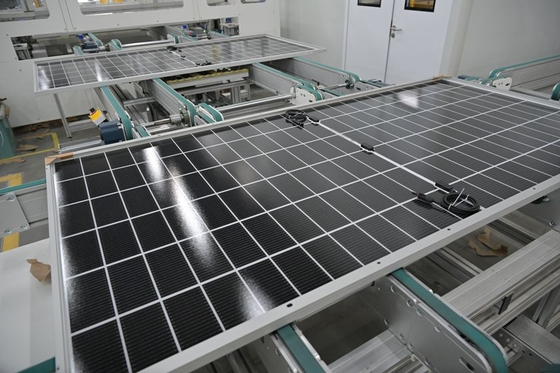
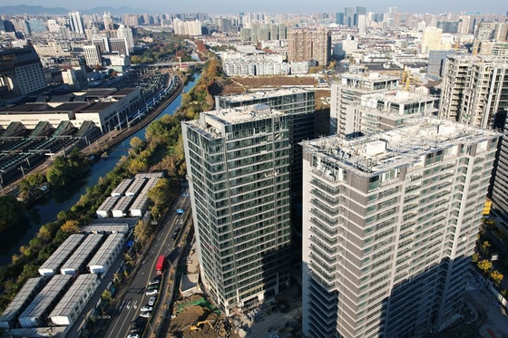

市场新闻中心
信号背后的
市场报道
面向当前市场的可视化信息源台账，将原始报道与本期市场观点连接起来。


更多报道
继续浏览信息源
其余 145 条报道按当前来源顺序呈现。
报道 005—016 12 条
005
证券时报
↗006IMF总裁警告AI失控风险
华尔街见闻 · 17 Oct 2026
↗007Huggingface发榜，中国模型StartLux稳居决策模型SOTA
凤凰财经
↗008蔚来全新ES8保值率第一？35W以上最保值新能源SUV怎么来的？10-16 18:130评
凤凰财经
↗009“校园贷鼻祖”罗敏，补税7.9亿元10-17 22:440评
凤凰财经
↗010马斯克反思白宫往事，称美债问题只能靠AI和机器人解决
华尔街见闻 · 17 Oct 2026
↗011印度网络安全机构称，多个AI模型在测试期间入侵印度企业实时系统
证券时报
↗012禁止返费、串通操纵等！央行出手，债券发行定价迎严监管
网易财经
↗0132026网易经济学家年会
东方财富 · 2026-10-18 07:39:43
↗014最新警报！对冲基金大举撤退 什么信号？
新浪财经 · 17 Oct 2026
↗015特朗普政府提议乌和平协议包含欧洲重购俄天然气，德国明确反对
证券时报
↗016退休三年！邮储银行原副行长曲家文被查
东方财富 · 2026-10-18 07:35:29
↗胡塞武装称击落一架沙特“卡里亚尔”武装侦察无人机
报道 017—028 12 条
017 025
025
第一财经
↗018中国企业出海新趋势，何为“原生全球化”｜70载广交会“全球客商到广交会不只是寻找订单，更是寻找价值共鸣的全球伙伴。”昨天 18:22
新浪财经 · 17 Oct 2026
↗019特朗普肯塔基造势，夸耀本届权力更强，许下多项中期选举竞选承诺
第一财经
↗020重视大订单也心系小需求：中国制造的场景进化与极速定制｜70载广交会面对全球消费分层，外贸企业凭借强大供应链与敏捷响应，在微观赛道实现“后来居上”。昨天 16:09
财新
↗021火车新增“X”字头 “K”、“T”字头从“绿皮车”变高铁(含视频)
证券时报
↗022大手笔！301086，拟投资10亿元，布局机器人业务！
财新
↗023禁止出口目录拟增列部分生物医药技术，涉及CGT、小核酸等
东方财富 · 2026-10-18 06:45:09
↗024在承前启后的关键时期全面发力
东方财富 · 2026-10-18 04:50:07
↗莫桑比克中部交通事故造成13人死亡
025中国证券报
↗026第六届上海国际金融论坛在沪举办 聚焦AI赋能金融新世代
华尔街见闻 · 17 Oct 2026
↗027加拿大央行：油价走高将提振增长与通胀
凤凰财经
↗028出口暴增1220%，全球资本涌入
第一财经
↗散户也能拥有量化交易工具？全球8校同台竞技金融科技创新来自全球8所高校的参赛队伍历经80小时极限开发。昨天 23:02
报道 029—040 12 条
029 039
039
证券时报
↗030霍尔木兹海峡，突传大消息！伊朗，最新动作！
东方财富 · 2026-10-18 04:30:06
↗031巴消息人士：巴基斯坦打击阿富汗武装边境哨所和军营
凤凰财经
↗032凤凰鉴保官 | “好医保”评测04-29 22:060评
新浪财经 · 17 Oct 2026
↗033马斯克称AI和机器人是解决美国国债问题唯一途径
证券时报
↗034下周2只新股开启申购！超千亿解禁潮将至，6股解禁比例均超50%（附股）
第一财经
↗035三大文化盛事同日交汇，上海演艺市场翻开新一页艺术盛会、文化地标、机制革新三件大事同步落地，昭示着上海这座城市阔步迈向具有世界影响力的社会主义国际文化大都市的决心与底气。昨天 19:56
中国证券报
↗036浙江美大停牌前连续涨停 控制权转让是否提前泄密
东方财富 · 2026-10-18 07:00:09
↗037“侧挂车”丰富香港风险管理工具
证券时报
↗038【财闻联播】上新！DeepSeek，大消息！国际货币基金组织，最新发声
证券时报
↗罕见！资金大规模出逃！美股做空者，7天暴赚2140亿元
039凤凰财经
↗040越跌越买！增量资金持续借道这些ETF入市10-15 21:030评
华尔街见闻 · 17 Oct 2026
↗医用外骨骼康复训练项目纳入多地医保
报道 041—052 12 条
041 042
042 045
045 051
051
东方财富 · 2026-10-18 04:10:05
↗从“腹地”到“前沿” 一条运河改写西南出海版图
042中国证券报
↗043万家基金吴宜蓉：畜牧养殖板块正从"估值修复型反弹"向"周期反转左侧定价"过渡
网易财经
↗044股市内参：总比别人领先一步
凤凰财经
↗这里是雄安：蓝绿交织与15分钟生活圈10-16 14:000评
045中国证券报
↗046万家基金吴宜蓉：科技的长期产业趋势没有改变
证券时报
↗047RISC-V重磅峰会将举办，产业空间有望超2000亿元，多只概念股砸出“深坑”
东方财富 · 2026-10-18 05:10:00
↗048又一龙头股 明日申购
证券时报
↗049突然，直线跳水！中东、俄乌局势，再传重磅
华尔街见闻 · 17 Oct 2026
↗050马斯克：AI和机器人是化解美国债务的唯一途径
东方财富 · 2026-10-18 07:49:00
↗北部湾港集团自平陆运河通航以来完成运河货物过货量突破100万吨
051中国证券报
↗052多地“首单”项目集中落地 开源证券跑出三四板对接加速度
财新
↗盛松成：美联储利率路径仍有不确定性
报道 053—064 12 条
053
财新
↗054一周天下｜特朗普支持率再创新低、巴基斯坦学校坍塌致33人死
华尔街见闻 · 17 Oct 2026
↗055塞内加尔前总统宣布退出联合国秘书长竞选
新浪财经 · 17 Oct 2026
↗056美国堪萨斯州一车辆冲入足球场 致多人死伤
新浪财经 · 17 Oct 2026
↗057庞兴海同志逝世
第一财经
↗0582026上海“城博会”月底启幕，把 "好房子" 搬进展馆昨天 21:56
东方财富 · 2026-10-18 07:17:38
↗059伊朗开火！阿富汗、巴基斯坦交火！乌克兰能源系统遭大规模袭击！原油暗盘直线拉升
华尔街见闻 · 17 Oct 2026
↗060泽连斯基称乌克兰能源系统遭大规模袭击
新浪财经 · 17 Oct 2026
↗061伊朗革命卫队发言人批评“炸弹之母”命名，称美国是野蛮文明
第一财经
↗062专访IMF研究部世界经济主管：五年或十年后会发生什么？目前还非常不确定五年或十年后会发生什么？目前还非常不确定。昨天 15:37
第一财经
↗063上海演艺集团成立！打造全国领先演艺“航空母舰”《上海戏剧振兴三年行动计划（2026-2028年）》发布。昨天 17:23
财新
↗0642027年税务系统国考招录占比升至67%高位 原因何在？
东方财富 · 2026-10-18 05:20:24
↗沙特首都利雅得居民收到防空警报
报道 065—076 12 条
065 068
068
新浪财经 · 17 Oct 2026
↗066Anthropic联合创始人：人工智能或推动美国经济规模到2030年达到44万亿美元
华尔街见闻 · 17 Oct 2026
↗067犹太定居者袭击欧洲外交官车辆
证券时报
↗华泰证券：航司运营继续好转 等待油价回落
068财新
↗069下周前瞻：巴西总统大选第二轮投票进行；塞尔维亚举行国会选举
财新
↗070俄安全局拘押一名日本记者 被控协助日政府调查北方四岛动员参战情况
证券时报
↗071顶级富豪，集体成银幕“反派”！科技巨头，发生了什么？
华尔街见闻 · 17 Oct 2026
↗072法国巴黎圣奥诺雷街Burberry门店被哄抢，距爱丽舍宫500米。
证券时报
↗073延期募集！4家公募ETF同日公告
财新
↗074中央纪委国家监委网站：不论职务高低、贡献大小、退休与否，只要搞了腐败，就没有任何退路和所谓平安着陆
凤凰财经
↗075凤凰风暴眼 | 中国汽车出口太猛，船不够用了？
华尔街见闻 · 17 Oct 2026
↗076奔驰推出高性能纯电SUV，剑指保时捷
东方财富 · 2026-10-18 07:53:44
↗鲁比奥：白宫无人下令降低乌克兰接入“星链”的速度
报道 077—088 12 条
077 079
079 080
080 081
081 084
084
华尔街见闻 · 17 Oct 2026
↗078克罗地亚总理普连科维奇会见王毅
新浪财经 · 17 Oct 2026
↗德国基民盟青年代表在党代会上要求默茨辞职
079中国证券报
↗国测量子黎启飞：耐心资本托举硬科技跨过产业化关键一程
080中国证券报
↗盐津铺子获第十届“拉姆·查兰管理实践奖”杰出奖
081中国证券报
↗0822700平方米临港展示区将亮相第九届进博会 100余家企业共展产业创新生态
证券时报
↗083刷屏！知名港星投资巨亏！总想一夜暴富，不敢告诉家人亏损金额……
第一财经
↗第二十五届中国上海国际艺术节在上海大歌剧院举行开幕活动，陈吉宁孙业礼朱忠明出席开幕活动后上演了艺术节暨上海大歌剧院开幕音乐会《大歌剧院和她的朋友们》。昨天 21:48
084新浪财经 · 17 Oct 2026
↗085巴基斯坦暂时关闭与伊朗的边境贸易通道
华尔街见闻 · 17 Oct 2026
↗086报道：维多集团传奇石油衍生品交易员Yaoyao Liu将离职
新浪财经 · 17 Oct 2026
↗087梅赛德斯推出高性能电动SUV
新浪财经 · 17 Oct 2026
↗088赫格塞思私下被鼓励竞选2028总统，多重短板成参选阻碍
财新
↗白宫新任发言人上任一周遭解雇 特朗普劝其重新考虑职业
报道 089—100 12 条
089 097
097 098
098 099
099
中国证券报
↗090贷款中介“付费加白”调查：借渠道说辞收取高额费用
东方财富 · 2026-10-18 05:30:08
↗缅甸发生4.3级地震 震源深度9千米

091财新
↗中国限制或禁止出口AI、生物医药和光伏三领域共40项技术(含视频)

092财新
↗093又有两城出台住房销售细则 杭州允许现售项目带押销售
财新
↗094当AI能解难题，如何识别天才：AI时代的科研评价之困
华尔街见闻 · 17 Oct 2026
↗095民调：公投前支持石油重镇艾伯塔省留在加拿大的声音升温
新浪财经 · 17 Oct 2026
↗096德国执政党地方账户遭黑客入侵 默茨等数千人收到钓鱼邮件
东方财富 · 2026-10-18 06:10:09
↗结构向优塑造发展新优势
097中国证券报
↗持续加码AI 帝欧水华动作频频
098中国证券报
↗商务部新闻发言人就欧盟峰会提出对华“双轨”思路答记者问
099中国证券报
↗10035家物理AI企业首次上榜 2026 AI Cloud 100 China榜单发布
华尔街见闻 · 17 Oct 2026
↗英国海事贸易行动办公室（UKMTO）接到通报：也门东南部发生事故。 一艘液化天然气（LNG）货轮报告称，一艘小型快艇两次向其开火。
报道 101—112 12 条
101 104
104
证券时报
↗102警惕“央国企内推”骗局！五部门发布风险提示
华尔街见闻 · 17 Oct 2026
↗103中信建投：AI加速重塑制药传统研发范式
财新
↗大西洋观察｜尾大不掉的英国福利开支
104中国证券报
↗1052026天津五大道金融论坛举行 共探大国创新与金融强国建设
华尔街见闻 · 17 Oct 2026
↗106工会组织：Antofagasta与参与罢工的工人们达成薪资协议。
证券时报
↗107源杰科技：“未来两年客户需求能见度很高”
凤凰财经
↗108智界将获独立造车资质，内部人士确认公司计划上市10-17 19:150评
第一财经
↗109上海大歌剧院开幕，“中国扇”向世界奏响第一声第二十五届中国上海国际艺术节暨上海大歌剧院开幕音乐会《上海大歌剧院和她的朋友们》，于这座崭新文化地标奏响。12分钟前
东方财富 · 2026-10-18 07:35:28
↗110肯尼亚新增4例埃博拉病例 累计确诊7例
华尔街见闻 · 17 Oct 2026
↗111蓝色起源目标2030年实现每周多次新格伦发射，斥资数十亿美元挑战SpaceX
财新
↗112中美建立AI对话机制意义深远
证券时报
↗“悦己微醺”取代“应酬”，1351亿酒类消费新市场爆发
报道 113—124 12 条
113 121
121 123
123
第一财经
↗11403'37''老有所依｜银发经济新玩法：70岁男团组合如何撬动文旅消费银发族的消费正从基本物质型转向情绪价值型，并催生了银发文旅的新玩法和新商机。昨天 15:26
证券时报
↗115深交所拟决定：002717，退市！
新浪财经 · 17 Oct 2026
↗116维多集团传奇石油衍生品交易员Yaoyao Liu将离职
华尔街见闻 · 17 Oct 2026
↗117也门胡塞武装称击落一架沙特“阿帕奇”武装直升机
证券时报
↗118连续4年财报失真！301117，公司及相关责任人被罚1450万元
财新
↗119人事观察｜历任两省份纪委书记 56岁刘爽转岗退役军人事务部
新浪财经 · 17 Oct 2026
↗120美国纽约曼哈顿一地铁站发生枪击事件 致1人死亡
东方财富 · 2026-10-18 06:30:10
↗放秋假不止多休几天
121中国证券报
↗122工业和信息化部等四部门组织重点汽车生产企业开展座谈 加强汽车产品创新设计和研发测试验证管理
凤凰财经
↗Anthropic也要付10%高息，AI债市怎么了？
123中国证券报
↗124百利天恒EGFR×HER3双抗ADC获世界大奖
凤凰财经
↗黄金暴跌27%，白银价格腰斩！一场更大的贵金属危机正在酝酿？10-17 18:440评
报道 125—136 12 条
125 128
128 133
133 136
136
第一财经
↗126“AI宛如高速夜行、没有刹车的F1赛车”，IMF年会聚焦AI狂飙“人工智能（AI）的发展就像是在夜间高速行驶的F1赛车，车上甚至可能根本没有刹车。”昨天 21:08
新浪财经 · 17 Oct 2026
↗127沙特联军称在利雅得等多地拦截并摧毁4架无人机
新浪财经 · 17 Oct 2026
↗伊朗武装部队开火拦截霍尔木兹海峡“违规”通行船只
128中国证券报
↗129专家解读光伏技术出口管控新规：以“精准刻度”护航开放合作
东方财富 · 2026-10-18 07:15:07
↗130航空安全不能靠奇迹
第一财经
↗131DeepSeek更新模型了，还对外开放了搜索引擎更低成本、更快速度。昨天 18:21
华尔街见闻 · 17 Oct 2026
↗132伊朗最高领袖穆杰塔巴·哈梅内伊祝贺伊朗U23国家古典式摔跤队在美国拉斯维加斯举行的世界U23古典式摔跤锦标赛上夺得冠军。
网易财经
↗2025网易经济学家年会夏季论坛
133中国证券报
↗13410-17 07:56欧阳剑环央行拟三维度强化银行间债市发行规范央行拟三维度强化银行间债市发行规范中国人民银行10月16日消息，为规范银行间债券市场债券发行行为，维护市场秩序，促进债券市场高质量发展，中国人民银行制定了《银行间债券市场债券发行管理规则》，现面向社会公开征求意见。规则共二十八条，从发行人、承销商、投资人三个维度强化对债券发行行为的规范。
新浪财经 · 17 Oct 2026
↗135马斯克：承认在政治事务中“有些偏离正轨”
华尔街见闻 · 17 Oct 2026
↗据英国研究公司Benchmark Mineral Intelligence（BMI）：全球9月电动汽车销售下降2%至215万辆，结束此前连续六个月增长的趋势。
136财新
↗夜读精选｜德国一机器人当街对人进行性暗示触碰 拥有者遭调查机器人被扣留
报道 137—148 12 条
 137
137中国证券报
↗138京津冀等5个城市群将开展氢能综合应用试点工作
证券时报
↗139最新警报！对冲基金大举撤退，AI交易遭遇集中平仓，什么信号？
东方财富 · 2026-10-18 07:39:00
↗140吉林省气象台发布寒潮蓝色预警
凤凰财经
↗141美股最危险的分化：普通股票已经跌惨，AI巨头还能撑多久？
网易财经
↗1422025网易新能量 乳制品行业评选
第一财经
↗143老有所依｜70岁的男团组合、退休后卖民宿，解锁银发文旅新玩法随着老龄化加剧，银发经济正从基本物质消费转向情绪价值消费。昨天 15:10
财新
↗144两年债务规模下降18% 柳州原市委书记撰文谈化债细节
财新
↗145视线｜多次袭击沙特、控制曼德海峡，胡塞武装因何坐大？
财新
↗146人事观察｜曾参与山西官场重建 57岁女高官张敬平履新贵州省委统战部长
新浪财经 · 17 Oct 2026
↗147也门胡塞武装：沙特空袭塔伊兹省造成至少9人死亡
中国证券报
↗14819.67万亿元新风口：“体验”正在重塑消费
凤凰财经
↗